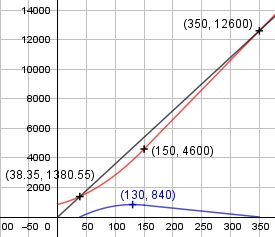

Aufgabe 91 Ein Produzent liefert einem Großhändler eine Ware zu 36 €/Stück. Seine Kosten ermittelt er mit der Funktion 0,1x2 + 10x + 850 für die ersten 150 Stück. Danach arbeitet er mit einer linearen Kostenfunktion. Die Gesamtkostenfunktion K(x) soll an der Stelle x = 150 differenzierbar sein. a) Wie lautet die Kostenfunktion K2 für x ≥ 150? b) Ab welcher Stückzahl macht der Hersteller Gewinn? c) Bei welcher Stückzahl ist der Gewinn am größten? a) K1 = Kostenfunktion bis 150 ME. K2 = mx + b = Lineare Kostenfunktion für den Bereich ≥ 150 ME: Soll die Gesamtkostenfunktion K an der Stelle x = 150 differenzierbar sein, muss K2 an dieser Stelle die selbe Steigung wie K1 haben. K1'(x) = 0,2x + 10 K1'(150) = 0,2 * 150 + 10 = 40 = m Die Gerade geht durch den Punkt (150|0,1 * 1502 + 10 * 150 + 850 = 4 600) m und die Punktkoordinaten in K2 eingesetzt: 4 600 = 40 * 150 + b | -6 000 b = - 1 400 K2 = 40x - 1 400 b) E(x) = 36 * x Gewinnfunktion G1(x) bis x ≤ 150 G1(x) = 36x - (0,1x2 + 10x + 850) G1(x) = - 0,1x2 + 26x - 850 - 0,1x2 + 26x - 850 = 0 | :(-0,1) x2 - 260x + 8 500 = 0 p, q - Formel: p = -260, q = 8 500 x2,3 = x2,3 = 130 ± x2,3 = 130 ± x1,2 = 130 ± 91,65 x1 = 221,65 keine Lösung > 150 x2 = 38,35 = Gewinnschwelle. Gewinnfunktion G2(x) für x ≥ 150 G2(x) = 36x - (40x - 1 400) G2(x) = -4x + 1 400 -4x + 1 400 = 0 |+4x 4x = 1 400 | :4 x = 350 = Gewinngrenze c) G1'(x) = -0,2x + 26 G1''(x) = -0,2 < 0 --> Hochpunkt -0,2x + 26 = 0 +0,2x 0,2x = 26 |:0,2 x = 130 G2(130) = -0,1 * 1302 + 26 * 130 - 850 = 840 Ab einer Stückzahl > 130 nimmt der Gewinn kontinuierlich ab.
